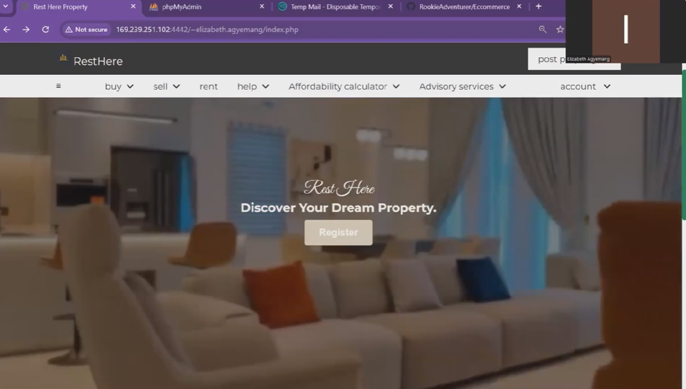
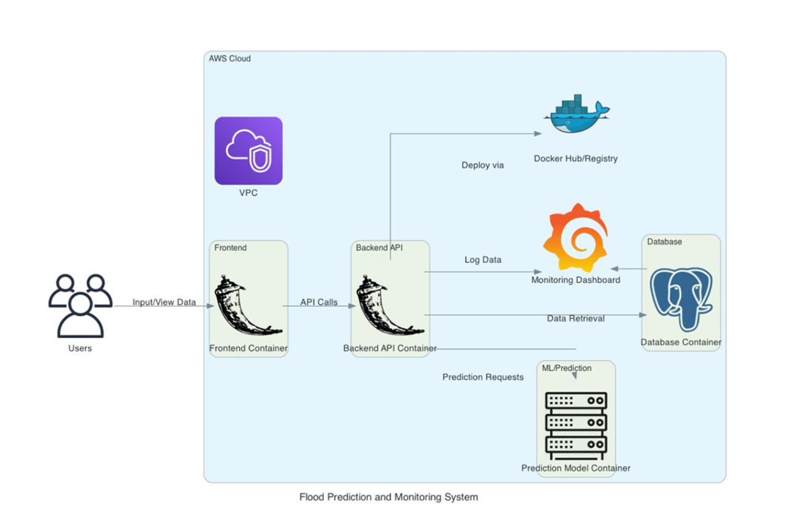
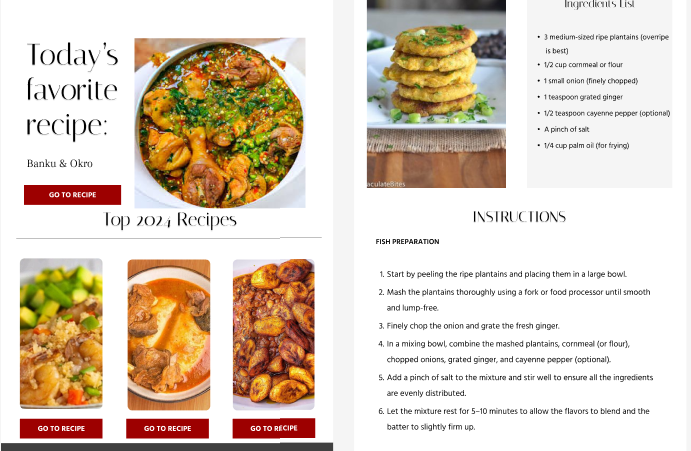

Projects
Data Analytics
Software
Weather App
Html, Css, Openweather API, Javascript, PHP
Developed a weather application that integrates with the OpenWeather API to provide real-time weather data and forecasts. The app features a responsive design and a user-friendly interface for seamless navigation.
Rest Here- Real Estate Ecommerce platform
Html, Css, Bootstrap, Javascript, PHP
Designed and developed an e-commerce platform for real estate listings. The application allows users to browse properties, filter search results, and access essential property details. Built with a clean and interactive design.
Flood monitoring and Prediction System
Collaborated on building a flood prediction and monitoring system using real-time data analysis. The system alerts users to potential flood risks, enabling communities to take preventive measures effectively.

Lost and found Website
Html, Css, Bootstrap, Javascript, PHP
Collaborated with two teammates to create a platform to help students report and recover lost items. The site features a searchable database, user-friendly forms, and an intuitive design to connect owners with their belongings quickly.
Design
Akorno
Figma
Designed a user-friendly mobile app for Akorno, a popular campus cafeteria. The app streamlines food ordering and offers delivery services, reducing the long lunchtime queues and improving convenience for students and staff.

LingsCars Redesign
Figma
I redesigned the website to make it simpler and more enjoyable to use.12 week year.
Sankofa 1957
Figma
I designed a simple recipe website page inspired by Ghana's Independence.